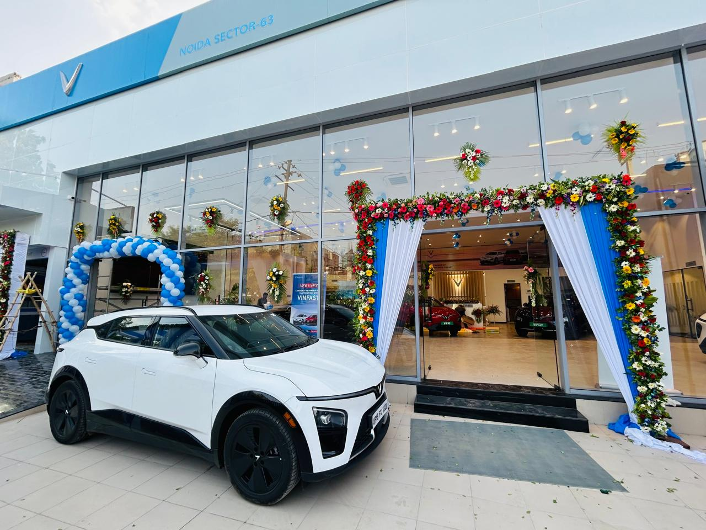
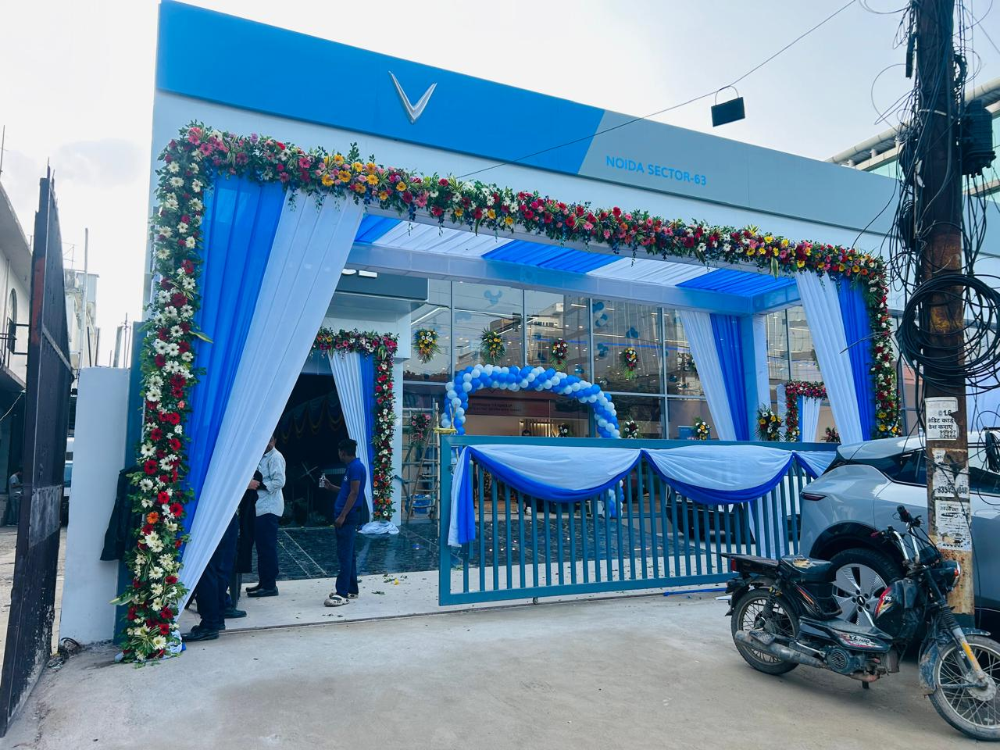
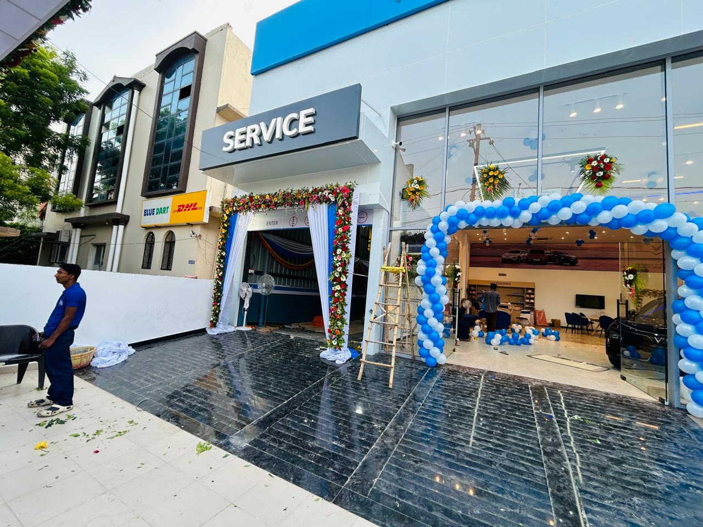
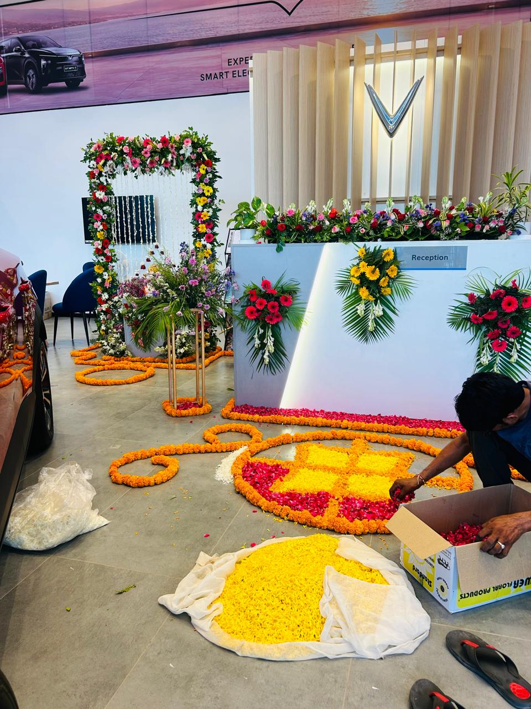
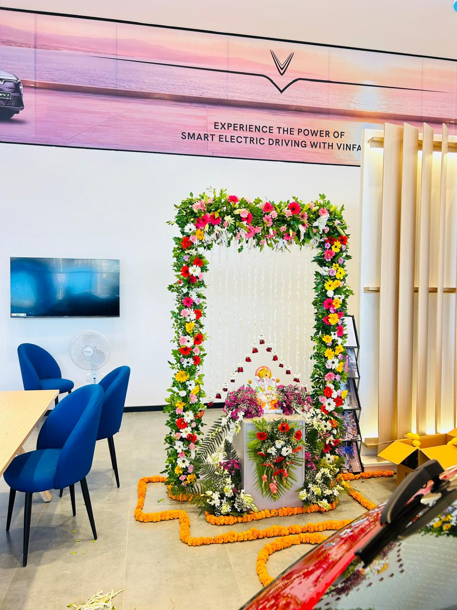
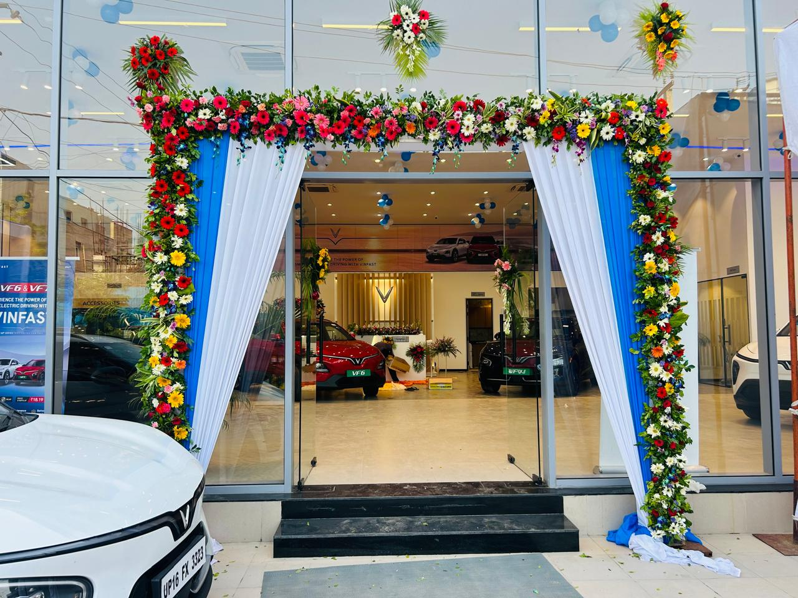

Car Showroom Flower Decoration in Noida Sector 63

A Complete Car Showroom Event Decoration
Our Sharma Flower Decorators team completed this car showroom flower decoration in Noida Sector 63 for a showroom event. The finished setup covered the front elevation, main customer entrance, service entrance, glass façade, reception, floor decoration and an indoor Ganesh Ji display, creating one coordinated welcome experience for visitors arriving at the electric-car showroom.

From the First Call and WhatsApp Photos to the Site Visit
The showroom team called us, explained the occasion and sent photographs and decoration ideas over WhatsApp. After understanding the entrance size, brand colours and guest movement, we visited the Noida Sector 63 location, measured the areas and planned where flowers, fabric, balloons and floor designs would work best. This call-to-WhatsApp-to-site-visit process helps us prepare a practical design before starting the decoration; customers can also explore our flower decoration photo gallery for more completed designs.

Fresh Flowers, Drapes and Balloon Entrance Design
For the outdoor design, we built rectangular floral frames using red, pink, yellow and white gerbera-style blooms, roses, white chrysanthemums, seasonal filler flowers and dense green foliage. White and bright blue drapes matched the showroom branding, while blue-and-white balloon arches highlighted a second doorway. Smaller flower bunches with palm leaves were fixed across the glass façade to carry the same design across the full frontage. Customers also planning family celebrations can check our Shubh marriage dates and muhurat guide before scheduling their event decoration.

Reception Flowers and Petal Rangoli
Inside the showroom, the reception counter received a long fresh-flower arrangement with red and pink blooms, white flowers, lilies, orchids and greenery, plus matching palm-leaf flower sprays on the front. On the floor, our decorators shaped orange marigold borders and filled the rangoli with yellow marigold, red rose and white flower petals. Curved marigold lines connected the reception, display area and photo point so the indoor decoration felt festive without blocking customer pathways.

Ganesh Ji Floral Backdrop and Showroom Photo Point
A multicolour flower arch surrounded the Ganesh Ji setup, with hanging white flower strings, fern leaves, gerberas, orchids and mixed arrangements around the pedestal. This area worked as a devotional welcome feature and an attractive photo point for the occasion. Businesses planning a showroom opening, car launch, office inauguration or corporate event in Noida can call us on +91 99998 89817 and send venue photos on WhatsApp; we can then suggest a customized decoration based on the entrance size, event theme, flower choice and budget.
